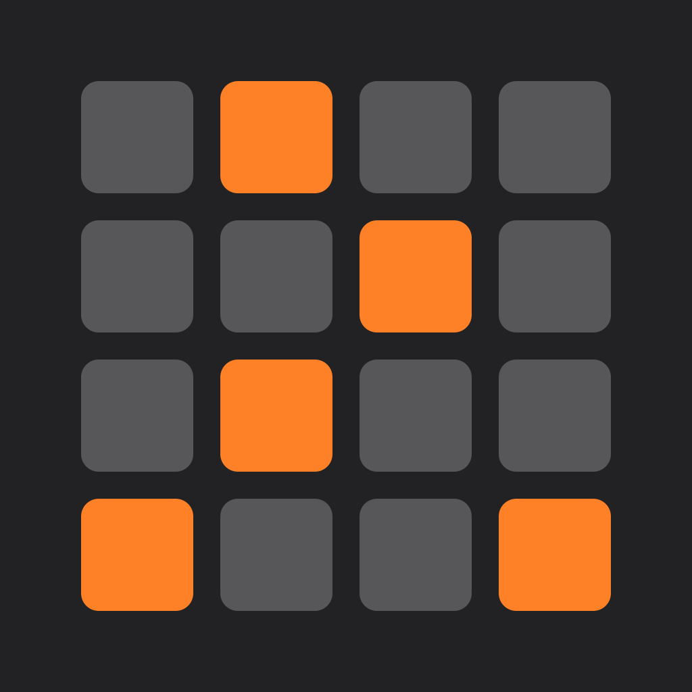
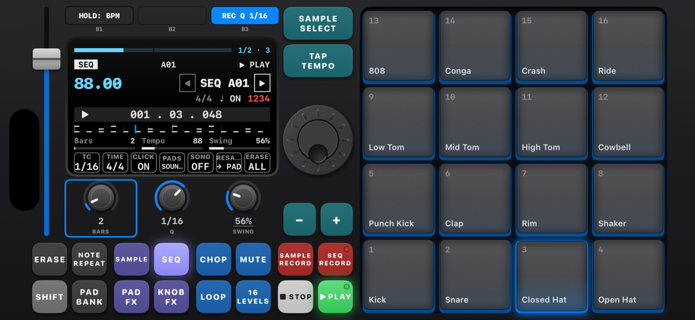

ChopPad
Chop songs into pads and make beats on your iPhone.
A free MPC-style pad sampler and music beat maker for iPhone and iPad, laid out like a hardware sampler. Sample a song or the mic, chop it into slices, drop them on 16 pads and build a beat with the sequencer.
Free, no ads, no subscription. iOS and iPadOS 17 or later.

A beat playing on the SEQ screen, iPhone in landscape. · 1 of 5
An MPC-style sampler app for making music
Sample your own songs
Pick a song from your iPhone or the Files app, choose the part you want and change its pitch without changing the speed.
Chop it up
Chop at every hit, into 4, 8 or 16 even slices, or live: hit any pad while the song plays and the slice lands on that pad.
Record anything
Record from the mic or an audio interface, or resample ChopPad itself. SAMPLE RECALL catches the last 30 seconds you played.
8 banks × 16 pads
A drum kit on bank A and five factory kits to start from. Trim, tune, filter, envelope and warp each pad to the tempo.
Looping sequencer
128 sequences up to 128 bars, swing, quantize, step edit, note repeat with triplets, song mode and fader automation.
Effects
16 PAD FX played from the pads, FLEX BEAT repeats, and KNOB FX: vintage, vinyl, tape, delay, filter, pump and compressor.
Install with SideStore
- Open SideStore → Sources → +
- Paste this source URL:
https://raw.githubusercontent.com/hertn/ChopPad-app/main/source.json - Find ChopPad and tap Get.
Updates show up in SideStore. The source also works in AltStore. Or download ChopPad.ipa directly and read the manual.
Support
ChopPad is free, with no ads or subscriptions. If you enjoy it, you can buy me a coffee on Ko-fi.